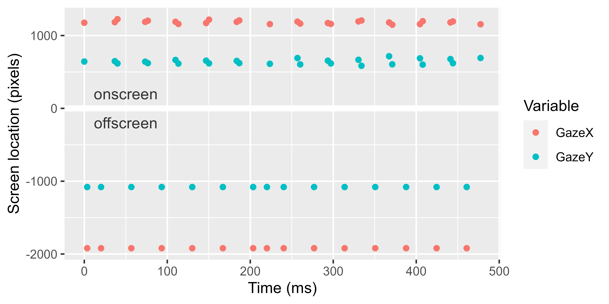
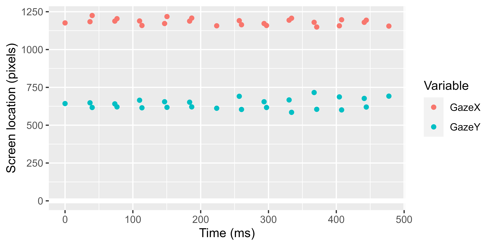

library(dplyr)
library(ggplot2)
library(rlang)
# the data is bundled with an R package I wrote
# devtools::install_github("tjmahr/fillgaze")
df <- system.file("test-gaze.csv", package = "fillgaze") %>%
readr::read_csv() %>%
mutate(Time = Time - min(Time)) %>%
select(Time:REyeCoordY) %>%
round(3) %>%
mutate_at(vars(Time), round, 1) %>%
mutate_at(vars(GazeX, GazeY), round, 0)
df
#> # A tibble: 14,823 × 8
#> Time Trial GazeX GazeY LEyeCoordX LEyeCoordY REyeCoordX REyeCoordY
#> <dbl> <dbl> <dbl> <dbl> <dbl> <dbl> <dbl> <dbl>
#> 1 0 1 1176 643 0.659 0.589 0.566 0.602
#> 2 3.5 1 -1920 -1080 -1 -1 -1 -1
#> 3 20.2 1 -1920 -1080 -1 -1 -1 -1
#> 4 36.8 1 1184 648 0.664 0.593 0.57 0.606
#> 5 40 1 1225 617 0.685 0.564 0.591 0.579
#> 6 56.7 1 -1920 -1080 -1 -1 -1 -1
#> 7 73.4 1 1188 641 0.665 0.587 0.572 0.6
#> 8 76.6 1 1204 621 0.674 0.568 0.58 0.582
#> 9 93.3 1 -1920 -1080 -1 -1 -1 -1
#> 10 110. 1 1189 665 0.666 0.609 0.572 0.622
#> # ℹ 14,813 more rowsIn this post, I describe a recent case where I used rlang’s tidy evaluation system to do some data-cleaning. This example is not particularly involved, but it demonstrates is a basic but powerful idea: That we can capture the expressions that a user writes, pass them around as data, and make some 💫 magic ✨ happen. This technique in R is called nonstandard evaluation.
Strange eyetracking data
Last week, I had to deal with a file with some eyetracking data from a sequence-learning experiment. The eyetracker records the participant’s gaze location at a rate of 60 frames per second—except for this weird file which wrote out ~80 frames each second. In this kind of data, we have one row per eyetracking sample, and each sample records a timestamp and the gaze location :eyes: on the computer screen at each timestamp. In this particular dataset, we have x and y gaze coordinates in pixels (both eyes averaged together, GazeX and GazeY) or in screen proportions (for each eye in the EyeCoord columns.)
In this particular eyetracking setup, offscreen looks are coded as negative gaze coordinates, and what’s extra weird here is that every second or third point is incorrectly placed offscreen. We see that in the frequent -1920 values in GazeX. Plotting the first few x and y pixel locations shows the pattern as well.
p <- ggplot(head(df, 40)) +
aes(x = Time) +
geom_hline(yintercept = 0, size = 2, color = "white") +
geom_point(aes(y = GazeX, color = "GazeX")) +
geom_point(aes(y = GazeY, color = "GazeY")) +
labs(
x = "Time (ms)",
y = "Screen location (pixels)",
color = "Variable"
)
#> Warning: Using `size` aesthetic for lines was deprecated in ggplot2 3.4.0.
#> ℹ Please use `linewidth` instead.
p +
annotate(
"text", x = 50, y = -200,
label = "offscreen", color = "grey20"
) +
annotate(
"text", x = 50, y = 200,
label = "onscreen", color = "grey20"
) 
It is physiologically impossible for a person’s gaze to oscillate so quickly and with such magnitude (the gaze is tracked on a large screen display), so obviously something weird was going on with the experiment software.
This file motivated me to develop a general purpose package for interpolating missing data in eyetracking experiments. This package was always something I wanted to do, and this file moved it from the someday list to the today list.
A function to recode values in many columns as NA
The first step in handling this problematic dataset is to convert the offscreen values into actual missing (NA) values). Because we have several columns of data, I wanted a succinct way to recode values in multiple columns into NA values.
First, we sketch out the code we want to write when we’re done.
set_na_where <- function(data, ...) {
# do things
}
set_na_where(
data = df,
GazeX = GazeX < -500 | 2200 < GazeX,
GazeY = GazeY < -200 | 1200 < GazeY
)That is, after specifying the data, we list off an arbitrary number of column names, and with each name, we provide a rule to determine whether a value in that column is offscreen and should be set to NA. For example, we want every value in GazeX where GazeX < -500 or 2299 < GazeX is TRUE to be replaced with NA.
Bottling up magic spells
Lines of computer code are magic spells: We say the incantations and things happen around us. Put more formally, the code contains expressions that are evaluated in an environment.
In our function signature, function(data, ...), the expressions are collected in the special “dots” argument (...). In normal circumstances, we can view the contents of the dots by storing them in a list. Consider:
But we not passing in regular data, but expressions that need to be evaluated in a particular location. Below the magic words are uttered and we get an error because they mention things that do not exist in the current environment.
hello_dots(GazeX = GazeX < -500 | 2200 < GazeX)
#> Error in eval(expr, envir, enclos): object 'GazeX' not foundWhat we need to do is prevent these words from being uttered until the time and place are right. Nonstandard evaluation is a way of bottling up magic spells and changing how or where they are cast—sometimes we even change the magic words themselves. We bottle up or capture the expressions given by the user by quoting them. quo() quotes a single expression, and quos() (plural) will quote a list of expressions. Below, we capture the expressions stored in the dots :speech_balloon: and then make sure that their names match column names in the dataframe.
set_na_where <- function(data, ...) {
dots <- quos(...)
stopifnot(names(dots) %in% names(data), !anyDuplicated(names(dots)))
dots
# more to come
}
spells <- set_na_where(
data = df,
GazeX = GazeX < -500 | 2200 < GazeX,
GazeY = GazeY < -200 | 1200 < GazeY
)
spells
#> <list_of<quosure>>
#>
#> $GazeX
#> <quosure>
#> expr: ^GazeX < -500 | 2200 < GazeX
#> env: global
#>
#> $GazeY
#> <quosure>
#> expr: ^GazeY < -200 | 1200 < GazeY
#> env: globalI call these results spells because it just contains the expressions stored as data. We can interrogate these results like data. We can query the names of the stored data, and we can extract values (the quoted expressions).
names(spells)
#> [1] "GazeX" "GazeY"
spells[[1]]
#> <quosure>
#> expr: ^GazeX < -500 | 2200 < GazeX
#> env: globalCasting spells
We can cast a spell by evaluating an expression. To keep the incantation from fizzling out, we specify that we want to evaluate the expression inside of the dataframe. The function eval_tidy(expr, data) lets us do just that: evaluate an expression expr inside of some data.
# Evaluate the first expression inside of the data
xs_to_set_na <- eval_tidy(spells[[1]], data = df)
# Just the first few bc there are 10000+ values
xs_to_set_na[1:20]
#> [1] FALSE TRUE TRUE FALSE FALSE TRUE FALSE FALSE TRUE FALSE FALSE TRUE
#> [13] FALSE FALSE TRUE FALSE FALSE TRUE TRUE FALSEIn fact, we can evaluate them all at once with by applying eval_tidy() on each listed expression.
Finishing touches
Now, the rest of the function is straightforward. Evaluate each NA-rule on the named columns, and then set each row where the rule is TRUE to NA.
set_na_where <- function(data, ...) {
dots <- quos(...)
stopifnot(names(dots) %in% names(data), !anyDuplicated(names(dots)))
set_to_na <- lapply(dots, eval_tidy, data = data)
for (col in names(set_to_na)) {
data[set_to_na[[col]], col] <- NA
}
data
}
results <- set_na_where(
data = df,
GazeX = GazeX < -500 | 2200 < GazeX,
GazeY = GazeY < -200 | 1200 < GazeY
)
results
#> # A tibble: 14,823 × 8
#> Time Trial GazeX GazeY LEyeCoordX LEyeCoordY REyeCoordX REyeCoordY
#> <dbl> <dbl> <dbl> <dbl> <dbl> <dbl> <dbl> <dbl>
#> 1 0 1 1176 643 0.659 0.589 0.566 0.602
#> 2 3.5 1 NA NA -1 -1 -1 -1
#> 3 20.2 1 NA NA -1 -1 -1 -1
#> 4 36.8 1 1184 648 0.664 0.593 0.57 0.606
#> 5 40 1 1225 617 0.685 0.564 0.591 0.579
#> 6 56.7 1 NA NA -1 -1 -1 -1
#> 7 73.4 1 1188 641 0.665 0.587 0.572 0.6
#> 8 76.6 1 1204 621 0.674 0.568 0.58 0.582
#> 9 93.3 1 NA NA -1 -1 -1 -1
#> 10 110. 1 1189 665 0.666 0.609 0.572 0.622
#> # ℹ 14,813 more rowsVisually, we can see that the offscreen values are no longer plotted. Plus, we are told that our data now has missing values.
# `plot %+% data`: replace the data in `plot` with `data`
p %+% head(results, 40)
#> Warning: Removed 15 rows containing missing values (`geom_point()`).
#> Removed 15 rows containing missing values (`geom_point()`).
One of the quirks about some eyetracking data is that during a blink, sometimes the device will record the x location but not the y location. (I think this happens because blinks move vertically so the horizontal detail can still be inferred in a half-closed eye.) This effect shows up in the data when there are more NA values for the y values than for the x values:
We can equalize these counts by running the function a second time with new rules.
Alternatively, we can do this all at once by using the same NA-filtering rule on GazeX and GazeY.
These last examples, where we compare different rules, showcases how nonstandard evaluation lets us write in a very succinct and convenient manner and quickly iterate over possible rules. Works like magic, indeed.